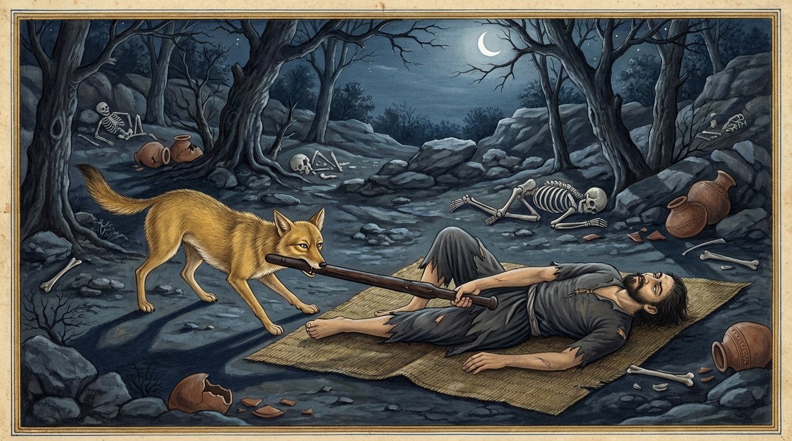

2. සිඟාල ජාතකය (142)
“එතං හි තෙ දුරාජානං” (මෙය නුඹට දැනගැනීමට අපහසුය) යන මේ ජාතක කථාව භාග්යවතුන් වහන්සේ වේළුවනාරාමයේ වැඩවාසය කරන සමයෙහි දේවදත්ත තෙරුන් බුදුරජාණන් වහන්සේව මැරීමට ගත් උත්සාහය අරබයා දේශනා කළ සේක. දම්සභා මණ්ඩපයෙහි භික්ෂූන් වහන්සේලාගේ කථාව අසා, “මහණෙනි, දේවදත්ත මා මැරීමට උත්සාහ කළේ දැන් පමණක් නොවේ; පෙරත් මා නසනු පිණිස උත්සාහ කළේමය. එහෙත් මා මැරීමට නොහැකි විය. ඔහු තෙමේම වෙහෙසට පත්විය” යි වදාරා අතීත කථාව ගෙනහැර දැක්වූ සේක.
අතීතයෙහි බරණැස් නුවර බ්රහ්මදත්ත රජු රාජ්ය කරන කල්හි බෝධිසත්ත්වයන් වහන්සේ සිවල් යෝනියෙහි ඉපිද, සිවල් රජෙක් වී සිවල් සමූහයා පිරිවරාගෙන සොහොන් වනයෙහි වාසය කළහ. එකල්හි රජගහ නුවර උත්සවයක් විය. මේ උත්සවයේදී මිනිස්සු බෙහෙවින් මත්පැන් පානය කරති. එය ‘සුරා උත්සවය’ නම් විය. එකල එහි බොහෝ ධූර්තයෝ (සල්ලාලයෝ) බොහෝ මත්පැන් ද මස් ද ගෙන්වා, සැරසී සිට ගී ගයමින් මත්පැන් බොති; මස් කති. රාත්රියෙහි පළමු යාමය අවසානයේ මස් අවසන් විය; නමුත් මත්පැන් බොහෝ ඉතිරි විය. එහිදී එක් ධූර්තයෙක් “මස් ගෙනෙව” යි කී කල්හි මස් අවසන් බව අන්යයෝ කීහ. එවිට එම ධූර්තයා “මා සිටින තාක් කල් මස් හිඟයක් නම් නැතැ” යි කියා, “අමු සොහොනට ගොස් මළ මිනී කෑමට පැමිණි සිවලුන් මරා මස් ගෙනෙමි” යි සිතා, මුගුරක් ගෙන, ජලය බැස යන කාණුව තුළින් නුවරින් නික්ම සොහොනට ගොස්, මළ අයකු මෙන් උඩුකුරුව හාන්සි වී හොත්තේය. එකල්හි බෝසත්හු සිවල් රැළ පිරිවරාගෙන එහි ගියාහුය. ඒ ධූර්තයා දැක, ‘මේ මළ මිනියක් නොවන බව’ දැන, ‘වඩාත් හොඳින් විමසා බලමි’ යි සිතා යටි සුළඟට ගොස් ඉව කිරීමේදී සිරුරේ ජීව ගන්ධය දැනී, ඒකාන්තයෙන්ම ඔහු නොමළ බව දැන ගත්හ. “මොහු ලජ්ජා කරවා පලවා හරින්නෙමි” යි සිතා ළඟට ගොස් මුගුරු කෙළවර කටින් ඩැහැ ඇද්දාහ. ධූර්තයා මුගුර අත නොහැරියේය. ඔහු වඩ වඩාත් තදින් මුගුර අල්ලාගත් විට බෝසත්හු පස්සට පැන, “එම්බා පුරුෂය! ඉදින් නුඹ මැරුණෙහි නම්, මා මුගුර අදින කල්හි මෙතරම් තදින් අල්ලා නොගන්නෙහිය. මේ කරුණින් නුඹ මළ බව හෝ නොමළ බව දැන ගැනීම පහසු විය” යි කියා මේ ගාථාව වදාළහ.

“යම් හෙයකින් නුඹ මළ කෙනෙකු මෙන් නිදා ගත්තෙහි ද, එසේ වුවත් (මා) මුගුර අදින කල්හි එය (නුඹේ) අතින් නොගිලිහෙයි ද, එබැවින් නුඹ මළ බව හෝ නොමළ බව දැනගැනීම (මට) දුෂ්කර කරුණක්ය.” (යනු බෝසතුන්ගේ සරදම් කථාවයි).
එහි අර්ථය මෙසේය: එතඤ්හි තෙ දුරාජානං යනු නුඹගේ ඔය ක්රියාව (කපටි අදහස) දැනගැනීම මට අපහසු නොවේ. යං සෙසි මතසායිකං යනු යම් හෙයකින් නුඹ මළ අයෙකු නිදන විලාසයෙන් නිදා සිටින්නෙහි ද, මළ මිනියක් සේ සයනය කරන්නෙහි ද යන්නයි. යස්ස තෙ කඩ්ඪමානස්ස යනු යම් හෙයකින් නුඹේ අතේ ඇති මුගුරු කෙළවර අල්ලා අදින කල්හි එය අතින් නොගිලිහෙයි ද, (ඒ නිසා) නුඹ සැබවින්ම මළ අයෙකු නොවන බව පෙනේ.
මෙසේ කී කල්හි ඒ ධූර්තයා, “මොහු මා නොමළ බව දනියි” යැයි සිතා, නැගිට මුගුරෙන් දමා ගැසීය. එහෙත් මුගුර ඉලක්කය වැරදී ගියේය. එවිට ධූර්තයා, “පලයන්, මාගේ පහර වැරදුණි” යයි කීවේය. එවිට බෝසත්හු ආපසු හැරී, “එම්බා පුරුෂය, මා හට පහර වැරදුන ද, නුඹට අට මහා නිරය සහ සොළොස් ඔසුපත් නිරය නම් නොවරදින්නේය” යි පවසා පිටත් ව ගියහ. ධූර්තයා කිසිවක් නොලැබ සොහොනෙන් නික්ම, (නගරයේ ජලය බැස යන) කාණුවෙන් නාගෙන, පැමිණි මගින්ම නුවරට පිවිසියේය.
බුදුරජාණන් වහන්සේ මේ ධර්ම දේශනාව ගෙනහැර දක්වා ජාතකය ගළපා නිම කළ සේක. “එකල ඒ ධූර්තයා වූයේ දේවදත්තය. සිවල් රජු වූයේ මම ම වෙමි.”
දෙවන වූ සිඟාල ජාතක වර්ණනාවයි.